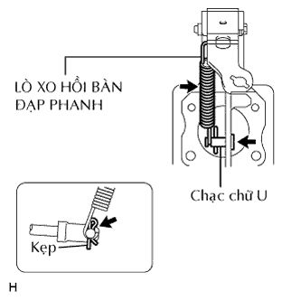

BÀN ĐẠP PHANH > LẮP |
| 1. LẮP GIÁ ĐỠ BÀN ĐẠP PHANH |
 |
Lắp giá đỡ bằng 4 đai ốc.
Lắp bu lông vào giá đỡ.
| 2. LẮP CHẠC CHỮ U CẦN ĐẨY XI LANH PHANH CHÍNH |
|  |
Bôi mỡ Glycol gốc xà phòng Lithium lên chốt chạc chữ U.
Lắp chốt chạc chữ U và một kẹp mới.
Lắp lò xo hồi.
| 3. KIỂM TRA VÀ ĐIỀU CHỈNH CHIỀU CAO BÀN ĐẠP PHANH |
 |
Kiểm tra chiều cao bàn đạp.
Điều chỉnh chiều cao bàn đạp.
Tháo giắc nối công tắc đèn phanh.
Tháo công tắc.
Nới lỏng đai ốc hãm chạc chữ U của cần đẩy.
Điều chỉnh độ cao bàn đạp bằng cách vặn cần đẩy.
Xiết chặt đai ốc hãm.
 |
Lắp công tắc vào bộ điều chỉnh cho đến khi nó chạm nhẹ vào bàn đạp.
 |
Vặn công tắc 1/4 vòng theo chiều kim đồng hồ.
Lắp giắc nối vào công tắc.
Kiểm tra khe hở công tắc.
| 4. KIỂM TRA HÀNH TRÌNH TỰ DO CỦA BÀN ĐẠP PHANH |
 |
Tắt máy. Hãy đạp phanh một vài lần cho đến khi không có chân không trong bộ trợ lực. Sau đó nhả bàn đạp.
Nhấn bàn đạp cho đến khi cảm nhận được có lực cản.
Kiểm tra hành trình tự do của bàn đạp bằng cách đo khoảng cách giữa vị trí ở bước trước đó và vị trí nhả bàn đạp.
Kiểm tra khe hở công tắc.
| 5. KIỂM TRA KHOẢNG DỰ TRỮ BÀN ĐẠP PHANH |
 |
Nhả cần phanh tay. Khởi động động cơ.
Đạp bàn đạp và kiểm tra khoảng cách dự trữ của bàn đạp.
Nhấn bàn đạp với một lực 490 N (50 kgf, 110 lbf).
Đo khoảng cách giữa bàn đạp và tấm vách ngăn như chỉ ra trong hình vẽ.
| 6. LẮP CỤM ĐỒNG HỒ TÁP LÔ |
Lắp đồng hồ táp lô (Xem trang Kích chuột vào đây).